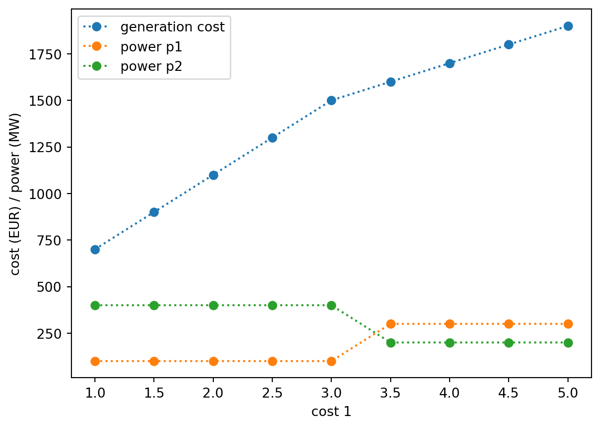

import pyomo.environ as pyoEx. T1: Economic Dispatch
Problem Description
TipEconomic Dispatch
The economic dispatch (ED) problem is a classical LP (or QP) problem in power systems operations: given a set of generating units with known cost functions and physical limits, allocate the total power demand among them so as to minimize total generation cost, while satisfying system-wide power balance and individual unit constraints.
In its canonical linear form, we have
\[\min_{p} \sum_{i=1}^{n} c_i p_i\]
\[\text{s.t.} \quad \sum_{i=1}^{n} p_i = D, \qquad p_i^{\min} \le p_i \le p_i^{\max}, \quad \forall i\]
where \(p_i\) is the power output of unit \(i\), \(c_i\) is its marginal cost (€/MWh), \(D\) is the total system demand, and \([p_i^{\min}, p_i^{\max}]\) are the unit’s generation limits. ED is widely used to optimize energy-mix problems, power markets, microgrid planning, and stochastic dispatch under uncertain conditions, eg. wind, solar.
We will analyze and solve a simple ED problem with 2 generators, each with a cost and with generation bounds.
| Unit \(i\) | Cost \(c_i\) | min output | max output | ||
|---|---|---|---|---|---|
| 1 | 3 | 50 | 300 | ||
| 2 | 4 | 100 | 400 |
In the CDT context, this case could describe the allocation, within a compute or a data center, of the demand among several hardware options. Each option, e.g. CPU or GPU, will have its own costs and capacity bounds.
Python and Pyomo
Pyomo extends Python to provide a mathematical modelling language to formulate optimization problemss. The official Pyomo documentation contains many advanced features of Pyomo that we do not cover here.
Before using Pyomo, it needs to be imported. By saying import as pyo where we are define pyo as a shorthand under which to access everything that Pyomo provides. This is best practice: it means that everything coming from Python itself or from other packages is cleanly separated from Pyomo - anytime we need Pyomo, we access it through pyo, as shown below.
Next, we define a variable to hold the model. By convention, we call this model. The model itself is created by calling ConcreteModel(), which creates an object which is a member of the ConcreteModel class.
Later on, we will fill this ConcreteModel with the variables and constraints.
model = pyo.ConcreteModel(name="Economic dispatch")Variables
Variables, are defined with Var objects. We “attach” them to the model as follows: model.variable_name = .... Here, variable_name is the name of the variable inside the model, and must therefore be unique to the model. For example:
model.p_1 = pyo.Var(within=pyo.NonNegativeReals)
model.p_2 = pyo.Var(within=pyo.NonNegativeReals)By using pyo.NonNegativeReals, we do not need to add extra “greater than or equal to zero” constraints on these variables.
Objective Function
Just like we did for the variables, we create a pyo.Objective and attach it to our model. We noame it generation_cost but any name is possible (for example, you might want to always call the objective the same - obj or objective).
We give the objective two arguments:
expris the mathematical expression of the objective functionsenseis used to specify whether we are looking for a maximum (pyo.maximize) or a minimum (pyo.minimize) of this function. Ifsenseis omitted, minimization is assumed.
model.generation_cost = pyo.Objective(
expr = 3 * model.p_1 + 4 * model.p_2,
sense = pyo.minimize
)An alternative way to formulate the objective is to use sets.
prices = {"c_1": 3, "c_2": 4}
power_plant_types = ["t_1", "t_2"]
model.power_generation = pyo.Var(power_plant_types, within=pyo.NonNegativeReals)
model.generation_cost = pyo.Objective(
expr = sum(prices[i] * model.power_generation[i] for i in power_plant_types),
sense = pyo.minimize
)It makes use of additional features of Python, like the sum() function, and a so-called “comprehension” that iterates over all elements in the set (for i in power_plant_types). With this kind of approach, you can easily build a model with thousands of variables if necessary, which can easily be dealt with in mostly automated ways, like here wher we sum up in the objective function.
Constraints
Finally, we add the equality and inequality (bound) constraints, again giving each constraint an expr which is its mathematical formulation.
model.t1_min = pyo.Constraint(expr=model.p_1 >= 50)
model.t1_max = pyo.Constraint(expr=model.p_1 <= 300)
model.t2_min = pyo.Constraint(expr=model.p_2 >= 100)
model.t2_max = pyo.Constraint(expr=model.p_2 <= 400)
model.demand = pyo.Constraint(expr=model.p_1 + model.p_2 == 500)Solving the Model
By default, Pyomo captures only a limited amount of information from the solver. Because we later want to look at dual variables, we need to specify this before solving with the following statement–see the documentation for details.
model.dual = pyo.Suffix(direction=pyo.Suffix.IMPORT)Next, in order to solve the model, we first need to let Pyomo make the connection to a solver - a separate program that knows how to solve a specific kind of optimization problem. In our case, we are solving a linear (LP) problem. Gurobi is a commercial solver that uses the Simplex algorithm to solve such problems, and is free to use for problems with up to 2000 variables and constraints, so we can use it here.
solver = pyo.SolverFactory('gurobi')If we prefer to use a free, open-source solver for linear problems, we can instead use GLPK:
solver = pyo.SolverFactory('glpk')Finally, we can pass our model to the solver, which solves the problem and then passes back the solution to Pyomo (or tells us if something went wrong and no optimal solution was found).
solver.solve(model){'Problem': [{'Name': 'x1', 'Lower bound': 1700.0, 'Upper bound': 1700.0, 'Number of objectives': 1, 'Number of constraints': 5, 'Number of variables': 2, 'Number of binary variables': 0, 'Number of integer variables': 0, 'Number of continuous variables': 2, 'Number of nonzeros': 6, 'Sense': 'minimize'}], 'Solver': [{'Status': 'ok', 'Return code': 0, 'Message': 'Model was solved to optimality (subject to tolerances), and an optimal solution is available.', 'Termination condition': 'optimal', 'Termination message': 'Model was solved to optimality (subject to tolerances), and an optimal solution is available.', 'Wall time': 0.003762960433959961, 'Error rc': 0}], 'Solution': [OrderedDict({'number of solutions': 0, 'number of solutions displayed': 0})]}We observe that solver.solve(model) returns very summary information about the model solution. In this case, you can see 'Termination condition': 'optimal' – this means the solver found an optimal solution.
If we do not want to display this information but capture it for later use, we could assign it to a variable, i.e.:
result_object = solver.solve(model)If you want to see the output from the solver while it is solving the model, you can set the tee argument to True - in the above case, you would see the output from Gurobi, giving more detail on what it is doing while solving the problem (e.g. what exact algorithm it is using, etc):
solver.solve(model, tee=True)Read LP format model from file /var/folders/kx/_1g1vzv51nq1yv81c377flsr0000gn/T/tmppmb9qx95.pyomo.lp
Reading time = 0.00 seconds
x1: 5 rows, 2 columns, 6 nonzeros
Set parameter QCPDual to value 1
Gurobi Optimizer version 12.0.2 build v12.0.2rc0 (mac64[arm] - Darwin 23.3.0 23D56)
CPU model: Apple M2
Thread count: 8 physical cores, 8 logical processors, using up to 8 threads
Non-default parameters:
QCPDual 1
Optimize a model with 5 rows, 2 columns and 6 nonzeros
Model fingerprint: 0xcd7cc850
Coefficient statistics:
Matrix range [1e+00, 1e+00]
Objective range [3e+00, 4e+00]
Bounds range [0e+00, 0e+00]
RHS range [5e+01, 5e+02]
Presolve removed 5 rows and 2 columns
Presolve time: 0.00s
Presolve: All rows and columns removed
Iteration Objective Primal Inf. Dual Inf. Time
0 1.7000000e+03 0.000000e+00 0.000000e+00 0s
Solved in 0 iterations and 0.00 seconds (0.00 work units)
Optimal objective 1.700000000e+03{'Problem': [{'Name': 'x1', 'Lower bound': 1700.0, 'Upper bound': 1700.0, 'Number of objectives': 1, 'Number of constraints': 5, 'Number of variables': 2, 'Number of binary variables': 0, 'Number of integer variables': 0, 'Number of continuous variables': 2, 'Number of nonzeros': 6, 'Sense': 'minimize'}], 'Solver': [{'Status': 'ok', 'Return code': 0, 'Message': 'Model was solved to optimality (subject to tolerances), and an optimal solution is available.', 'Termination condition': 'optimal', 'Termination message': 'Model was solved to optimality (subject to tolerances), and an optimal solution is available.', 'Wall time': 0.0009300708770751953, 'Error rc': 0}], 'Solution': [OrderedDict({'number of solutions': 0, 'number of solutions displayed': 0})]}Now that the model is solved, we can display detailed information about it, including the state of the variables, the objective, and the constraints, with model.display():
model.display()Model Economic dispatch
Variables:
p_1 : Size=1, Index=None
Key : Lower : Value : Upper : Fixed : Stale : Domain
None : 0 : 300.0 : None : False : False : NonNegativeReals
p_2 : Size=1, Index=None
Key : Lower : Value : Upper : Fixed : Stale : Domain
None : 0 : 200.0 : None : False : False : NonNegativeReals
Objectives:
generation_cost : Size=1, Index=None, Active=True
Key : Active : Value
None : True : 1700.0
Constraints:
t1_min : Size=1
Key : Lower : Body : Upper
None : 50.0 : 300.0 : None
t1_max : Size=1
Key : Lower : Body : Upper
None : None : 300.0 : 300.0
t2_min : Size=1
Key : Lower : Body : Upper
None : 100.0 : 200.0 : None
t2_max : Size=1
Key : Lower : Body : Upper
None : None : 200.0 : 400.0
demand : Size=1
Key : Lower : Body : Upper
None : 500.0 : 500.0 : 500.0Finally, we can use the Python print function to set up a nicer overview of the results we care about most, for example:
print(f"Generation costs (objective) = {model.generation_cost()} EUR")
print(f"Plant 1 generation = {model.p_1()} MW")
print(f"Plant 2 generation = {model.p_2()} MW")Generation costs (objective) = 1700.0 EUR
Plant 1 generation = 300.0 MW
Plant 2 generation = 200.0 MWDual Variables, Shadow Prices and Marginals
Recall that constraints in the primal problem are associated with variables in the dual problem. The LP optimality condition for the basic ED (ignoring bound constraints) yields the classic equal incremental cost rule,
\[ c_i = \lambda \quad \forall i \text{ unconstrained}, \]
where \(\lambda\) is the dual variable (shadow price) of the balance constraint — precisely the system marginal price (SMP) or locational marginal price (LMP) in nodal pricing markets. This is the LP duality descibed above: \(\lambda\) gives the marginal cost of serving one additional MW of demand.
The solver solves the dual problem for us at the same time as solving the primal problem. Because we set up the model to extract this information earlier (model.dual = pyo.Suffix(direction=pyo.Suffix.IMPORT)), we can now get the shadow prices of the primal problem by looking up the optimal values of the variables of the dual problem, as follows:
model.dual[model.my_constraint_name]We print out the shadow price of some of our constraints:
print(f"Shadow price of `demand` = {model.dual[model.demand]}")
print(f"Shadow price of `t1_max` = {model.dual[model.t1_max]}")
print(f"Shadow price of `t1_min` = {model.dual[model.t1_min]}")Shadow price of `demand` = 4.0
Shadow price of `t1_max` = -1.0
Shadow price of `t1_min` = 0.0Exploring Multiple Parameters
We want to explore the effect of varying parameters on the overall cost. We create a new version with a mutable parameter, set to the cost of generator 2. Then we can run multiple models, while varying this parameter, and accumulate the results in a list using pyo.Param(mutable=True).
model = pyo.ConcreteModel(name="Economic dispatch, version 2")
##
# This is the key bit: we define a `pyo.Param` which is mutable,
# allowing us to set (and change) its value later
##
model.c_2 = pyo.Param(mutable=True)
model.p_1 = pyo.Var(within=pyo.NonNegativeReals)
model.p_2 = pyo.Var(within=pyo.NonNegativeReals)
model.generation_cost = pyo.Objective(
expr = 3 * model.p_1 + model.c_2 * model.p_2,
sense = pyo.minimize
)
model.t1_min = pyo.Constraint(expr=model.p_1 >= 50)
model.t1_max = pyo.Constraint(expr=model.p_1 <= 300)
model.t2_min = pyo.Constraint(expr=model.p_2 >= 100)
model.t2_max = pyo.Constraint(expr=model.p_2 <= 400)
model.demand = pyo.Constraint(expr=model.p_1 + model.p_2 == 500)
model.dual = pyo.Suffix(direction=pyo.Suffix.IMPORT)Now that we have a parameter in the model, we can solve the model several times with different values for this parameter. First, we define a list of values we want to explore, $c_2 { 1.0, 1.5, 2.0, 2.5, 3.0, 3.5, 4.0, 4.5, 5.0 } $
c_2_m = [1.0, 1.5, 2.0, 2.5, 3.0, 3.5, 4.0, 4.5, 5.0]Next, we are ready to iterate over each value in this list, set the c_2 parameter to the current value from the list, solve the model, and store three results we care about - the generation cost (objective function value), \(p_1\)$ power and \(p_2\) power generation, into a list that we call result_accumulator - since it accumulates results with the Python functionality to append a new entry to an existing list: result_accumulator.append(...).
result_accumulator = []
for i in c_2_m:
model.c_2 = i
solver.solve(model)
result_accumulator.append([model.generation_cost(), model.p_1(), model.p_2()])Put all the results into a pandas dataframe.
import pandas as pd
results = pd.DataFrame(result_accumulator, columns=["generation cost", "power p1", "power p2"], index=c_2_m)
results| generation cost | power p1 | power p2 | |
|---|---|---|---|
| 1.0 | 700.0 | 100.0 | 400.0 |
| 1.5 | 900.0 | 100.0 | 400.0 |
| 2.0 | 1100.0 | 100.0 | 400.0 |
| 2.5 | 1300.0 | 100.0 | 400.0 |
| 3.0 | 1500.0 | 100.0 | 400.0 |
| 3.5 | 1600.0 | 300.0 | 200.0 |
| 4.0 | 1700.0 | 300.0 | 200.0 |
| 4.5 | 1800.0 | 300.0 | 200.0 |
| 5.0 | 1900.0 | 300.0 | 200.0 |
Finally, we can save the results to a file and plot them.
results.to_csv("results.csv")
results.plot(xlabel="cost 2", ylabel="cost (EUR) / power (MW)", marker='o', linestyle=':')
Putting it all together: basic economic dispatch.
For clarity, we execute the following complete case. All components should be clear from the previous example.
import pyomo.environ as pyo
# Data
units = ['G1', 'G2', 'G3']
cost = {'G1': 20, 'G2': 35, 'G3': 50} # €/MWh
p_min = {'G1': 10, 'G2': 5, 'G3': 0} # MW
p_max = {'G1':100, 'G2': 80, 'G3': 60} # MW
demand = 180 # MW
m = pyo.ConcreteModel()
m.I = pyo.Set(initialize=units)
m.p = pyo.Var(m.I, bounds=lambda m, i: (p_min[i], p_max[i]))
m.cost = pyo.Objective(expr=sum(cost[i]*m.p[i] for i in m.I), sense=pyo.minimize)
m.balance = pyo.Constraint(expr=sum(m.p[i] for i in m.I) == demand)
solver = pyo.SolverFactory('glpk')
result = solver.solve(m)
for i in m.I:
print(f"{i}: {pyo.value(m.p[i]):.2f} MW")
print(f"Total cost: {pyo.value(m.cost):.2f} €/h")G1: 100.00 MW
G2: 80.00 MW
G3: 0.00 MW
Total cost: 4800.00 €/h